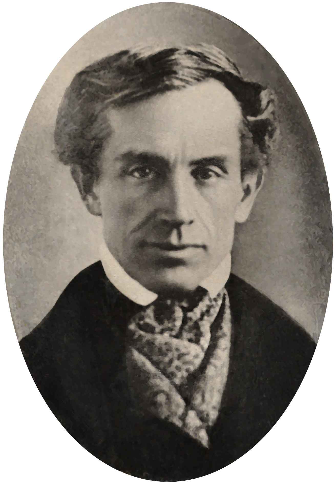

Central Questions
- What are the five information technology revolutions, and what ethical patterns do they share?
- Why does every revolutionary technology promise liberation yet enable new control?
- How have optimists and pessimists responded to each revolution — and who was right?
- How do economic and political interests shape the impact of new technology?
- What lessons should we carry into our thinking about AI, privacy, and surveillance today?
What Is Information Technology?
In 399 BCE, the philosopher Socrates was condemned to death by a jury of five hundred Athenians for impiety and corrupting the youth. His real offense, many historians believe, was that he questioned everything, including the authority of those who claimed to know best. He died having written nothing. Everything we know about him comes through other people's accounts, above all the dialogues of his student Plato — an irony Socrates would have appreciated, since he distrusted writing as a poor substitute for real conversation. He lives in history only because someone wrote about him.
This chapter begins with Socrates because his skepticism captures something true of every information revolution: adopters see the possibilities, critics see the risks, and history usually proves both partially right — with surprises larger than anyone predicted.
We need two definitions first.
Information Technology (IT)
Any technology used to create, store, transmit, or process information. By this definition information technology is ancient: writing, the printing press, the telegraph, and the smartphone are all IT, differing in speed and scale but not in kind.
This broad definition matters because it prevents us from treating the digital revolution as unprecedented. Every generation has faced the question of what new communication technologies mean for society, for truth, and for power. The second definition frames how we evaluate the answers.
Normative Ethics
The branch of philosophy concerned with how people ought to act — with the principles that distinguish right from wrong. Unlike descriptive ethics (what people actually believe) or metaethics (whether moral facts exist), normative ethics aims to guide conduct.
This course is primarily concerned with normative ethics applied to technology: not just describing what societies have done with their information tools, but evaluating whether they did it well. The five revolutions ahead are chronological, and each gives us new concepts and cases for that project.
| Revolution | Approximate Date | Key Thinkers | Core Tension |
|---|---|---|---|
| Writing | ~3200 BCE | Socrates, Plato | Memory vs. external record |
| Printing Press | ~1440 CE | Gutenberg, Luther, Erasmus | Free dissemination vs. responsible gatekeeping |
| Distance Communication | ~1840s | Morse, Mill, Marx | Individual liberty vs. ownership and power |
| Mass Media | ~1920s | Orwell, Arendt | Shared culture vs. propaganda and control |
| The World Wide Web | ~1990s | Berners-Lee, and us | Democratization vs. surveillance capitalism |
Notice the last column: in every row the same technology pulls in two directions, and the thinkers we will meet line up on opposite sides. Keeping that tension in view, rather than deciding in advance that technology is good or bad, is the habit this chapter is trying to build.
Thought Questions
- Our definition counts writing, the printing press, and the smartphone as the same kind of thing. What does that help you notice? What might it cause you to miss?
- What is the oldest piece of information technology you use in a normal week — and what would change if it vanished?
- Someone objects that digital technology is different in kind, because it computes rather than merely stores. Make that objection as strong as you can. Does it survive?
Revolution 1: Writing
Around 3200 BCE, in the city-states of ancient Mesopotamia — now Iraq — scribes began pressing reed styluses into wet clay to produce the world's first writing system: cuneiform. Its early uses were mundane: grain allocations, cattle inventories, commercial debts. Writing began as a technology for keeping score. Yet within a few centuries it had become a tool for preserving law, transmitting religion, accumulating science, and producing literature. The Epic of Gilgamesh, composed around 2100 BCE, is one of the earliest works of literature we have — a meditation on mortality, friendship, and the search for meaning.
Writing externalizes memory. Before it, knowledge lived inside people — in the minds of elders, the performances of bards, the skills of craftspeople — and died with them unless passed on by direct instruction. Writing broke that cycle. A legal code could outlast its author by millennia; a proof could be checked by people who never met its originator; a religious text could reach believers scattered across continents.
Not everyone celebrated. In Athens, Socrates looked at writing and saw something troubling: a technology that would give people the appearance of wisdom without the reality.

Key Thinker
Plato (c. 428–348 BCE)
Plato was born into an aristocratic Athenian family and became Socrates's most influential student. After Socrates's execution in 399 BCE, he traveled widely before returning to Athens to found the Academy. His works, all dialogues, explore ethics, politics, metaphysics, and epistemology.
Here lies the great irony: Plato preserved Socrates's oral philosophy in writing. In the Phaedrus he records Socrates arguing against writing itself — and we know that argument only because someone wrote it down. Socrates wrote nothing, believing genuine understanding could come only through live dialogue. Plato spent his life honoring his teacher's ideas by doing exactly what his teacher distrusted.
His Republic imagines an ideal state ruled by philosopher-kings; his Apology recounts Socrates's trial and death. His theory of Forms — that abstract concepts like Justice and Beauty are more real than physical objects — shaped Western philosophy for two thousand years.
The Myth of Theuth and Thamus
In the Phaedrus, Plato has Socrates tell a myth about the invention of writing. The Egyptian god Theuth presents writing to Thamus, king of Egypt, for royal approval, promising it will make the Egyptians wiser and improve their memory. Thamus disagrees, sharply: Theuth has invented not a memory aid but a reminder system — and a dangerous one at that.
One caution about the story itself. Socrates introduces it as an old tale he has "heard," handed down from Egypt, and generations of readers have taken him at his word. Classicists generally do not: no Egyptian source tells it, the names do not behave as genuine Egyptian traditions do in Greek retellings, and the structure is suspiciously well suited to Plato's argument. The myth is almost certainly Plato's own invention, dressed in borrowed antiquity for authority. Sit with that. Plato invented a story attacking writing, wrote it down, and it survives twenty-four centuries later because he wrote it down — the critique reaches us only through the technology it criticizes, and wearing a false citation.
For this invention will produce forgetfulness in the minds of those who learn to use it, because they will not practice their memory. Their trust in writing, produced by external characters which are no part of themselves, will discourage the use of their own memory within them. You have invented an elixir not of memory, but of reminding; and you offer your pupils the appearance of wisdom, not true wisdom, for they will read many things without instruction and will therefore seem to know many things, when they are for the most part ignorant and hard to get along with, since they are not wise, but only appear wise.
Thamus draws a precise distinction between memory — actively held, internalized knowledge — and reminding — the passive retrieval of stored information. His worry is not that a written text is false, but that readers will mistake looking something up for understanding it. They will "seem to know many things" while knowing very little. The same objection has since been raised about Google, Wikipedia, calculators, and AI chatbots. Every generation faces a version of Thamus's worry: does this new tool help us think, or does it think for us?
What's the Argument?
Socrates's Argument Against Writing
- Genuine knowledge requires active engagement: responding to questions, adapting an explanation to its audience, and examining one's own reasoning.
- A written text cannot respond or adapt — it says the same thing to everyone.
- Relying on written texts therefore produces a false sense of understanding: readers feel informed without having grasped the subject.
Is this convincing? Something in it is undeniably right: students who can recite a definition without being able to apply or explain it have experienced exactly what Socrates describes. And yet the argument seems too strong. The accumulated knowledge of human civilization — mathematics, science, literature, history, law — would be impossible without writing, and Socrates himself benefited from reading Homer, earlier philosophers, and Athenian drama. The argument identifies a real risk without proving that it outweighs the gains.
Case Study
Hammurabi's Code (c. 1754 BCE)
The Code of Hammurabi, commissioned by the king of Babylon and inscribed around 1754 BCE on a basalt stele more than seven feet tall, contains 282 laws governing everything from wages and property disputes to marriage, adoption, and criminal punishment. Its famous principle — "an eye for an eye, a tooth for a tooth" — is often quoted out of context; the code in fact constrained arbitrary royal power, binding the king's judges to written rules rather than personal whim.
Yet the same technology served opposite ends. The stele was publicly displayed — anyone who could read could check a judge's ruling against written law. But writing also enabled an imperial bureaucracy: tax records, tribute lists, and grain accounting let Hammurabi manage hundreds of thousands of people with a precision impossible in oral societies. Writing was at once a check on arbitrary power and a tool for consolidating it — the paradox that recurs in every IT revolution, where the technology of legal accountability is also the technology of surveillance.
Thought Questions
- Socrates worried that writing would make people seem wise without being wise. Has the internet made this better or worse? What evidence would you cite?
- Is Socrates's argument against writing a good one? Identify its strongest and weakest premise.
- Plato appears to have invented the Theuth myth and presented it as inherited Egyptian tradition. Does that change how much weight the argument deserves? Should it?
Revolution 2: The Printing Press
On October 31, 1517, a thirty-three-year-old monk and theology professor named Martin Luther circulated ninety-five theses — arguments he wanted to debate — in Wittenberg, Germany. The familiar image of Luther nailing them to the Castle Church door may or may not be true; historians have argued about it since the 1960s, because Luther never mentions the nailing and the earliest report comes from a colleague not yet living in Wittenberg. Posting theses on a church door was in any case a routine academic gesture. What happened next was not: within a few years his ideas, and his German translation of the Bible, had swept the continent. None of it would have been possible without the technology a German goldsmith named Johannes Gutenberg had developed roughly three-quarters of a century earlier: movable type printing.
Before Gutenberg, books were handwritten one at a time by scribes, usually monks; a single Bible might take a skilled scribe years and cost as much as a house. How many books existed in Europe on the eve of printing is genuinely unknown — estimates range from a few thousand to a few tens of thousands, and rest on assumptions hard to check. The scale of the change is not in dispute: by 1500, fifty years after Gutenberg's press began operating, European printers had produced between nine and twenty million volumes, depending on whose estimate you accept. Books became cheap enough that a prosperous merchant, and eventually a schoolmaster, could own one; literacy spread beyond the clergy and aristocracy; and the Catholic Church's long monopoly over the production and interpretation of written texts was shattered .

Key Thinker
Martin Luther (1483–1546)
Martin Luther was a German Augustinian friar, theologian, and professor whose protests against the Catholic Church's sale of "indulgences" — payments that supposedly reduced time in purgatory — launched the Protestant Reformation. His 95 Theses questioned papal authority over salvation, and his later writings developed a theology of faith alone (sola fide) and Scripture alone (sola scriptura).
Luther was among the first to grasp the printing press as a world-historical tool. He published with extraordinary speed; his complete works fill over a hundred volumes. He saw the press as providential: a divine instrument for spreading the Gospel without institutional mediation. His German Bible standardized the language and made Scripture accessible to people who could not read Latin.
Luther's legacy is complicated. The same convictions that led him to challenge tyrannical authority also led him to back the brutal suppression of the Peasants' Revolt (1525) and to write virulently anti-Semitic texts late in life — texts later cited by Nazi propagandists. He shows how the same technology can serve liberation and oppression alike, depending on who uses it and why.
Luther's enthusiasm for the press is usually illustrated with a single sentence, and it is worth pausing over.
The art of book printing is the last and greatest gift, because it is through this that the question of the true religion will become known to the entire world — to the very ends of the earth and in all languages — in accordance with God's will. It is the inextinguishable flame of the world.
Attributed to Martin Luther; provenance uncertain
This passage circulates everywhere — histories of printing, commencement addresses, posters in library corridors. It is also untraceable: it reaches us secondhand, through later compilers of Luther's table talk, and cannot be matched to anything Luther himself is known to have written. The sentiment fits him; the wording may not be his. It rhymes with the chapter's opening — we know Socrates only through Plato, and this Luther only through whoever wrote him down. Treat the quotation as a fair summary of Luther's attitude, not as evidence of what he said.
Luther and Erasmus: Two Visions of the Press
Luther's great contemporary, the Dutch humanist Desiderius Erasmus (c. 1466–1536), also benefited enormously from the press. His satire The Praise of Folly was a bestseller, and his 1516 edition of the Greek New Testament — collated from manuscripts he tracked down in Basel and England, printed alongside his own corrected Latin translation — was a monument of Renaissance scholarship. Yet he viewed Luther's use of the press with deep unease.
For Erasmus the problem was not the press but Luther's use of it: flooding the reading public with inflammatory, doctrinally complex arguments most readers were not equipped to evaluate. Where Luther saw a marketplace of ideas in which truth would triumph, Erasmus saw a bazaar where the loudest voice, not the wisest, would win. Reform should come from careful scholars within the Church, not from mass movements whipped up by pamphlets. Both men were partially right.
What's the Argument?
The Erasmian Argument for Gatekeeping
- Rapid, uncontrolled dissemination of complex ideas leads to widespread misunderstanding and social conflict.
- Most readers lack the training to evaluate complex theological, scientific, or philosophical arguments without expert guidance.
- Printing enables such ideas to reach mass audiences without any expert mediation.
Supporting argument
The evidence supports Erasmus's concern. Printing's first century and a half spread literacy and biblical knowledge, but it also made a durable bestseller of the witch-hunting manual Malleus Maleficarum (first printed 1486–87, and reprinted well into the seventeenth century), carried the pamphlet warfare that helped fuel the religious conflicts culminating in the Thirty Years' War, and gave anti-Semitic tracts a reach they had never had. The press did not just spread truth — it amplified every dangerous idea with equal indifference.
Objection
But who gets to be the gatekeeper? In Luther's day it was the Catholic Church and secular princes, who banned and burned books to suit their own interests; Erasmus himself was censured by Church authorities. Gatekeeping tends to protect the powerful, not the truth. Erasmus's argument, however reasonable in the abstract, risks being a defense of the status quo against any challenge from below.
The Luther-Erasmus debate is the prototype for an argument that recurs in every later information revolution: maximize the free flow of information, or filter it to prevent harm. We meet it again in internet content moderation (Chapter 3) and AI-generated misinformation (Chapter 7).
Case Study
The 95 Theses and the Speed of Print (1517)
Within two weeks of October 31, 1517, friends had Luther's theses printed in Leipzig, Nuremberg, and Basel; within two months they had reached much of the German-speaking world and beyond it into France, England, and Italy — staggeringly fast for a time when a manuscript letter might take weeks to travel the same distance. Pope Leo X is said to have dismissed the affair as a squabble among envious monks, a remark preserved only by later chroniclers but a fair picture of how little urgency Rome felt. By the time the Church recognized the seriousness of the situation, Luther's ideas had taken root across a continent.
New technologies change not just the reach of ideas but their velocity. An idea that spreads slowly gives institutions time to respond and adapt; an idea that spreads in days does not. That acceleration creates both opportunity (marginalized voices reach audiences quickly) and danger (misinformation outruns correction). In the sixteenth century it helped shatter the thousand-year unity of Western Christianity; in the twenty-first it shapes everything from political disinformation to scientific discovery.
Thought Questions
- Erasmus worried that the press spread ideas too quickly for ordinary readers to evaluate. Does social media have the same problem? Is it worse or better now?
- Who are the "gatekeepers" of information today? What legitimacy do they have — and who watches the watchmen?
- The most famous Luther quotation about printing cannot be traced to Luther, and the most famous image of him — hammer in hand at the church door — may never have happened. What should a reader do with a claim that is right in spirit but unverifiable in detail?
Revolution 3: Distance Communication
On May 24, 1844, Samuel Morse sat in the Supreme Court chamber of the U.S. Capitol and tapped out the first message over America's first long-distance telegraph line, forty miles to Baltimore. (Britain had beaten him to a working commercial telegraph by a few years, but Morse's line was the one that convinced the United States.) The message, chosen by Annie Ellsworth from the Book of Numbers, read: "What hath God wrought!" The telegraph was, by the standards of its time, magic: news that had traveled at the speed of a rider or a ship now arrived in seconds. For the first time in human history, a message could outrun the messenger.
Nineteenth-century commentators responded with extravagant enthusiasm: newspapers declared the telegraph would unite all nations, abolish war, and usher in universal peace. An 1858 transatlantic cable worked barely three weeks before failing; when a durable cable finally joined North America and Europe in 1866, it was celebrated as one of the greatest achievements in human history. The journalist Tom Standage calls the telegraph "the Victorian Internet" , and the comparison is apt: the utopian claims made about it in the 1860s were made almost word for word about the internet in the 1990s.

Two of the century's most important thinkers, John Stuart Mill and Karl Marx, offered sharply contrasting analyses of what communications technology meant for society. Their disagreement goes to the heart of a debate that still divides us: Is technology a neutral tool that enables individual freedom, or is it always shaped by — and in service of — whoever holds economic and political power?
A word about how we are using them. Mill and Marx never debated the telegraph — or each other about anything, in print or in person — and neither wrote a systematic philosophy of communications technology. What follows is not intellectual history but a reconstruction: we treat them as representatives of two positions that have outlasted them both, because each states his side with unusual clarity and because that disagreement organizes almost every argument about media ownership since. Read it as a staged contrast, not as a report of an argument these two men actually had.

Key Thinker
John Stuart Mill (1806–1873)
John Stuart Mill was a British philosopher, economist, and Member of Parliament, and the most influential liberal thinker of the nineteenth century. His father, James Mill, educated him with extraordinary intensity — Greek at three, Latin at eight — an experiment in radical rationalist education he later blamed for a serious psychological collapse in his twenties.
His most enduring work is On Liberty (1859), which argues for the maximum sphere of individual freedom constrained only by the "harm principle": you may do as you like until your actions harm others. On ideas Mill was an absolutist: even false opinions must be allowed expression, because the collision of ideas is how truth advances. Later readers named this picture the "marketplace of ideas," but the phrase is not Mill's — it entered circulation through twentieth-century American free-speech law, and Mill would probably have resisted it, since he wanted unpopular opinions actively protected rather than left to compete.
Mill also championed women's suffrage and worked to extend the benefits of liberal society to those excluded from it. He saw communications technology as, on balance, a force for individual liberation.

Key Thinker
Karl Marx (1818–1883)
Karl Marx was a German philosopher, economist, and revolutionary who, with Friedrich Engels, developed historical materialism and founded modern communist thought. Born in Prussia into a middle-class family of Jewish descent, he was radicalized by his studies of Hegel and by industrial capitalism's human costs. Expelled from Germany, France, and Belgium, he settled in London, researching in the British Museum while living in poverty.
Marx's central insight for our purposes is that technology is never politically neutral. It is developed, owned, and deployed within a specific economic system, and tends to serve those who control it. "The ruling ideas of each age," he and Engels wrote in the Communist Manifesto, "have ever been the ideas of its ruling class" . Applied to communications: whoever owns the newspapers, the telegraph wires, or the platforms controls what ideas reach the public, and on what terms.
This does not mean Marx was always right. His predictions of capitalism's inevitable collapse proved incorrect, and regimes claiming to act in his name produced some of the worst tyrannies in history. But his framework for thinking about technology and power is applied today by thinkers across the political spectrum.
If all mankind minus one were of one opinion, and only one person were of the contrary opinion, mankind would be no more justified in silencing that one person than he, if he had the power, would be justified in silencing mankind.
Mill's argument rests on the claim that truth tends to emerge from open debate. Suppress a right opinion and we lose the truth; suppress a wrong one and we lose the chance to understand why it is wrong — and an unexamined belief is a fragile one. But it assumes the market in ideas operates fairly: that all voices have equal access and the best arguments tend to win. Marx challenges precisely that assumption.
What's the Argument?
Marx's Argument: Technology Serves Its Owners
- Those who control the means of production — including the means of communication — have decisive influence over public opinion.
- Under capitalism, the means of communication (printing houses, telegraph companies, later broadcast networks and platforms) are owned by the wealthy.
- Owners use that control to promote ideas serving their interests and to marginalize ideas that threaten them.
You do not need to be a Marxist to find this argument troubling. In the United States today, most major media outlets are owned by a small number of large corporations, and the platforms through which most people receive their news are run by some of the wealthiest companies in history. Their algorithmic decisions — which stories are shown, which voices amplified, which content suppressed — have enormous consequences for public discourse. Mill's dream of open exchange and Marx's warning about concentrated ownership are both relevant here; neither alone is sufficient.
Thought Questions
- Mill argues that even false opinions should be allowed because debate is how we find truth. Does that work on social media, where algorithms determine which voices are amplified?
- Marx argues that whoever owns the means of communication controls the dominant ideas. What examples support this claim? What counterexamples?
- This section stages a debate between two men who never had one. What does that framing help you see, and what might it distort?
Revolution 4: Mass Media
The first three revolutions — writing, printing, distance communication — shared a structural feature: they moved information between individuals or small groups. A letter goes from one person to another; a printed pamphlet reaches thousands, but each reader reads alone. Radio and then television introduced something qualitatively new: broadcast — the simultaneous transmission of identical content to millions of passive recipients. For the first time in history, a single broadcast could address an entire nation at once.
The implications were enormous. Radio and television created genuinely shared cultural experiences at national scale and spread public health information, political news, and educational content rapidly. But they also created a new vulnerability: a small number of people controlling the broadcast infrastructure could shape the beliefs and emotions of a mass audience as earlier media could not. Two thinkers who witnessed the most catastrophic demonstration of that vulnerability — the rise of totalitarianism in Europe — provide our framework here.
Key Thinker
George Orwell (1903–1950)
George Orwell — born Eric Arthur Blair in British India — was a novelist, essayist, and journalist who spent his career bearing witness to the political catastrophes of the twentieth century. He served as a colonial police officer in Burma, fought in the Spanish Civil War on the Republican side (where he was shot through the throat), and saw at first hand how both fascist and Stalinist propaganda distorted reality and silenced dissent.
Animal Farm (1945) and Nineteen Eighty-Four (1949) are written as fiction but function as extended philosophical arguments about language, truth, and power. Orwell's central concern was the deliberate corruption of language — official terminology that means the opposite of what it seems to say ("War is Peace, Freedom is Slavery") — as a tool for eliminating political thought altogether.
Orwell died of tuberculosis in 1950, at forty-six, shortly after finishing Nineteen Eighty-Four. His coinages — "doublethink," "memory hole," "Big Brother," "Newspeak," "thoughtcrime" — are now permanent vocabulary for describing political manipulation.
The Party told you to reject the evidence of your eyes and ears. It was their final, most essential command. His heart sank as he thought of the enormous power arrayed against him… And yet he was in the right! They were wrong and he was right. The obvious, the silly, and the true had got to be defended. Truisms are true, hold on to that!
The passage describes what Orwell saw as the ultimate goal of totalitarian propaganda: not merely to make people believe false things, but to destroy their capacity to distinguish true from false at all. Once that is gone, a regime no longer needs to win arguments — only to repeat assertions loudly and often. Broadcast media was especially dangerous, in Orwell's analysis, because it reached everyone at once with the same message, eliminating the diversity of sources that might give people the resources to resist.
Key Thinker
Hannah Arendt (1906–1975)
Hannah Arendt was a German-Jewish philosopher who fled Nazi Germany in 1933, spent eighteen years as a stateless refugee, and became one of the most important political philosophers of the twentieth century. Persecution and exile gave her an outsider's perspective on institutions most Western thinkers took for granted.
In The Origins of Totalitarianism (1951), she argued that Nazi Germany and Stalinist Russia were not aberrations but outcomes of specific historical and social conditions . Her analysis is distinctive in focusing not on ideology but on loneliness: the breakdown of the social bonds and shared public world that give individuals a stable sense of reality. Isolated people, she argued, become susceptible to movements offering belonging and a totalizing explanation of the world.
Arendt is also famous for covering the 1961 trial of Adolf Eichmann, the Nazi official who organized the transportation of Jews to death camps. Her "banality of evil" — the observation that Eichmann was not a monster but a bureaucrat who had stopped thinking — remains one of the most disturbing ideas in modern ethics.
What's the Argument?
Arendt's Argument: Mass Media and Social Atomization
- Industrial modernity uproots people from stable communities, traditional roles, and inherited bonds, producing widespread isolation — what Arendt calls "atomization."
- Atomized individuals, lacking a shared social world, become desperate for coherence, belonging, and a sense that their lives matter.
- Mass broadcast media can deliver, simultaneously to millions of them, a totalizing ideology that explains everything and offers membership in a powerful movement.
Arendt adds an important dimension to Orwell. He focuses on the content of propaganda — the lies, the slogans, the manipulation; she focuses on the audience: why are people susceptible in the first place? Her answer — that isolation makes people hungry for the belonging ideological movements provide — has obvious implications for the present. If social media simultaneously increases connection and deepens loneliness, as some researchers argue, it may be amplifying exactly the vulnerability Arendt identified.
Case Study
Nazi Radio and the Volksempfänger (1933–1945)
When the Nazi Party came to power in Germany in 1933, radio was still relatively expensive. Propaganda Minister Joseph Goebbels recognized its potential and launched the Volksempfänger — the "People's Receiver" — a cheap, standardized set designed to bring Nazi broadcasts into every German home. By 1939 Germany had the world's highest rate of radio ownership, reaching roughly seventy percent of German households, about three times the share in 1932. (Counts of the Volksempfänger itself vary between sources; the household reach is the better-attested figure, and the more telling one.)
Radio carried Hitler's speeches live to the entire nation, saturated daily life with Party music, news, and ideology, and created the impression of a unified national community. Crucially, the sets were built to listen with, not to answer back: cheaper models deliberately omitted shortwave bands so that owners could not easily tune in foreign broadcasts. As Orwell and Arendt would have predicted, this was one-way communication in service of a regime that required passive acceptance, not active citizenship.
Broadcast media is inherently one-to-many, not many-to-many — the structural weakness internet advocates often cite. Whether social media's many-to-many structure is better in practice is a question for later chapters.
Thought Questions
- Arendt argues that loneliness makes people susceptible to totalitarian movements. If social media increases loneliness, does it increase this risk? What evidence bears on it?
- Orwell thought propaganda's ultimate goal was to destroy the capacity to distinguish truth from falsehood. Does "post-truth" suggest this has happened, or is it an exaggeration?
- The Nazis used radio to create a sense of national belonging. Is the community created by online groups healthy, dangerous, or something in between?
Revolution 5: The World Wide Web
In 1989, a British software engineer named Tim Berners-Lee, trained as a physicist and working at the CERN particle physics laboratory, wrote a memo proposing a system for managing information across the lab's network. His supervisor wrote "Vague but exciting" on the cover and returned it. Two years later, Berners-Lee had built the World Wide Web: hyperlinked documents reachable through a common protocol and address system. He then pressed CERN not to lock it down, and on April 30, 1993, CERN placed the Web software in the public domain, free for anyone to use or modify. By the mid-1990s the Web was transforming global communication; by the 2000s it was the dominant medium of human expression.
The early web carried utopian overtones familiar from every previous information revolution. "Information wants to be free," declared the technologist Stewart Brand — a slogan usually quoted at half its length, since Brand's point at the 1984 Hackers Conference was that information also wants to be expensive, and that the two pulls fight each other forever. The web would disintermediate — cut out the middlemen — empowering individuals and undermining institutional gatekeepers. But if the first phase of the web resembled a printing press in everyone's hands, the second — Web 2.0 and social media — resembled the consolidation of broadcast media into a few powerful hands.
Disintermediation
The removal of intermediaries (gatekeepers, middlemen) between producers and consumers. Each information revolution has promised disintermediation; each has been followed by reintermediation — new intermediaries, often more powerful than those they replaced.
By 2010, a handful of American technology companies — Google, Facebook, Amazon, Apple — had become the new gatekeepers of global information, their algorithms determining what news billions of people saw and what ideas were amplified or suppressed. These companies live on advertising revenue, which depends on engagement — and content that provokes outrage and fear generates more of it than calm content does. The best-documented example comes from Facebook's own files, copied in 2021 by the former product manager Frances Haugen and given to regulators, Congress, and journalists. Since 2017 the News Feed had counted each emoji reaction — including "angry" — as five times more valuable than an ordinary Like, on the theory that reactions signaled deeper engagement. By 2019 the company's own researchers had concluded that heavily "angry"-reacted posts were disproportionately likely to carry misinformation and low-quality news. Facebook cut all reactions to one and a half times a Like, and eventually cut "angry" to zero.
A caution, because confident claims outrun the evidence here. The most widely repeated story about algorithmic harm is the YouTube "rabbit hole": the idea that recommendations reliably walk ordinary viewers from mainstream political video toward extremist channels. Early journalism and small-scale audits supported it. Larger studies published since 2021, working from real browsing histories rather than from fresh accounts clicking whatever is recommended, find much weaker effects: most viewing of extreme content follows from subscriptions, off-platform links, and prior preferences rather than from the algorithm . They cannot rule out effects on small vulnerable groups or over long periods, and the debate is unsettled. The honest summary is that ranking systems demonstrably reward emotional intensity, and that how much they radicalize anyone remains genuinely contested.
The result is a structure none of the early web utopians predicted: an open network carrying traffic that is filtered and shaped by private, for-profit intermediaries whose interests are not necessarily aligned with the public good — the arrangement Shoshana Zuboff named "surveillance capitalism" . This is not unique to the web. The telegraph was carried by companies with commercial interests; radio and television were dominated by networks serving advertisers.
The pattern repeats. Secular printers and state censors replaced the Church as arbiters of what could be published; Western Union took a near-monopoly on American telegraph wires, with an exclusive arrangement with the Associated Press; a few national radio networks — NBC, CBS, and Mutual, joined by ABC in the 1940s — controlled what most Americans heard; and the internet reintermediated around Google, Facebook, and Amazon. The form of the intermediary changes; the fact of it does not.
| Debate | Position A | Position B |
|---|---|---|
| Content moderation | Maximize free expression; platforms should not censor | Platforms must limit harmful content to protect users and democracy |
| Data privacy | Users accept terms of service; data sharing enables services | Users cannot meaningfully consent to surveillance at this scale |
| Platform responsibility | Platforms are neutral conduits and should not be held liable for content | Platforms actively curate and amplify content; they bear editorial responsibility |
| Algorithmic amplification | Personalization improves relevance and user experience | Engagement-optimized algorithms amplify outrage and misinformation |
Case Study
The Arab Spring and Social Media (2010–2012)
Beginning in Tunisia in December 2010 and spreading across North Africa and the Middle East, the Arab Spring was a wave of popular uprisings against authoritarian governments, closely associated with Facebook, Twitter, and YouTube. Activists used these platforms to organize protests, share video evidence of government abuses, and coordinate at a speed and scale not possible before. The Tunisian and Egyptian governments fell within months.
Early coverage portrayed this as a vindication of the web's democratic promise: a "Facebook Revolution" that put the tools of political organization in the hands of ordinary people, bypassing state control of broadcast media. By 2013 the optimism had faded. Several uprisings devolved into civil wars with enormous humanitarian costs, and the regimes that survived adapted quickly, using the same platforms for surveillance, propaganda, and the identification of dissidents. In Syria, Egypt, and Bahrain, posts were used to track and arrest activists.
Both halves of the pattern are visible: the platform that enabled unprecedented popular organization also became a tool of state repression. The technology served whoever used it most effectively — sometimes the people, sometimes the state.
Thought Questions
- Berners-Lee pressed CERN to put the Web in the public domain rather than license it. Was that the right decision? What might have been different if the Web had been proprietary?
- Each IT revolution has produced new gatekeepers to replace old ones. Can this be prevented, or is it an iron law of IT history?
- Facebook's own documents show its ranking system rewarding outrage; the evidence that YouTube's recommendations radicalize viewers is much weaker than the popular story suggests. How should that difference change the way you argue about platform harm?
The Pattern Across the Revolutions
Across five information technology revolutions the pattern is strikingly consistent: every one promised liberation, and every one also enabled new forms of control — imperial bureaucracy, religious war, colonial coordination, totalitarian propaganda, surveillance capitalism. Both the optimists and the pessimists turned out to be right, about different things or about the same things at different times.
The most important lesson may be about technology and power. Technology is not a neutral tool societies simply pick up and use. It is developed within existing social structures, deployed by people with interests and agendas, and shaped in its effects by who controls it, who has access to it, and what system it operates within. This is not a counsel of despair: the printing press really did spread literacy and challenge the Church's monopoly, and social media really did let ordinary people organize in ways authoritarian governments found hard to stop. But it does mean that "Is this technology good or bad?" is usually the wrong question. The right questions are: Who controls it? Who benefits? Who bears the costs? And what governance could make the distribution of benefits more just?
| Revolution | Optimist's Promise | Pessimist's Warning | What Actually Happened |
|---|---|---|---|
| Writing | Preserve and spread knowledge (Theuth) | Weaken memory and produce false wisdom (Socrates) | Both: civilization and bureaucratic empire |
| Printing Press | Democratize access to ideas (Luther) | Spread dangerous ideas without expert mediation (Erasmus) | Both: Scientific Revolution and religious wars |
| Distance Communication | Unite humanity through free exchange (Mill) | Serve whoever owns the infrastructure (Marx) | Both: global connection and imperial coordination |
| Mass Media | Educate and inform the masses | Enable propaganda and destroy political thought (Orwell, Arendt) | Both: public education and totalitarian propaganda |
| The Web | Empower everyone, disintermediate gatekeepers | Create new monopolies and surveillance systems | Both: and the story is still being written |
The table also frames the topics ahead. Free speech, intellectual property, privacy, AI, and labor automation are not new problems; they are new chapters in a long story. Asking whether AI companies should be liable for what their systems generate is a version of the question asked about printing houses in the seventeenth century. Debating the regulation of social media algorithms echoes debates about telegraph monopolies in the nineteenth. The technologies change; the questions about power, access, truth, and harm recur.
Thought Questions
- The chapter claims that "Is this technology good or bad?" is the wrong question. Is that too easy an escape? Describe a technology for which it really is the right question.
- Table 1.3 puts both the optimist and the pessimist in the "partially right" column every time. A skeptic might call that unfalsifiable — any outcome could be described this way. How would you answer?
- Apply the chapter's three questions — who controls a technology, who benefits, who bears the costs — to something you used today. Do you know the answers?
Summary
This chapter has traced the history of IT ethics through five information revolutions. In each, both the optimists and the pessimists were partially right — and the decisive factor was not the technology itself but who controlled it and toward what ends. Socrates, Plato, Erasmus, Luther, Mill, Marx, Orwell, and Arendt offer frameworks that remain powerful for analyzing contemporary technology, from content moderation and surveillance capitalism to artificial intelligence and algorithmic amplification. We draw on all of them in the chapters ahead.
Thought Questions
- Several of this chapter's most memorable items turned out to be shaky: a myth Plato probably invented, a quotation Luther probably never wrote, a phrase Mill never used. What does that suggest about how ideas get transmitted — and about the vivid anecdotes in any textbook, including this one?
- Argue the strongest case you can against this chapter's central thesis: that every information revolution both liberates and enables control. What would count as evidence that one was simply good, or simply bad?
- If a sixth revolution is underway right now, what is it — and who is playing the roles of Theuth, Thamus, Luther, and Erasmus in it?
Key Points
- Information technology is ancient: writing, the printing press, the telegraph, and the internet are all IT, and raise structurally similar ethical questions.
- Socrates's argument (in Plato's Phaedrus) is the earliest technology ethics debate we can read: writing produces the appearance of wisdom, not wisdom itself, because it cannot respond to questions or adapt to its audience. The myth Socrates uses appears to be Plato's own invention.
- The Luther-Erasmus debate established the enduring tension between free dissemination and responsible gatekeeping — directly relevant to content moderation today.
- Mill saw communications technology as aligned with individual liberty and open competition among ideas. Marx held that technology serves whoever owns it, and that ownership is concentrated. The two never actually debated; we use them as representatives of two enduring positions.
- Orwell warned that state control of mass media could destroy the capacity to distinguish truth from falsehood. Arendt identified social atomization as the precondition that makes populations susceptible to propaganda.
- Disintermediation and reintermediation: every IT revolution promises to cut out gatekeepers and produces new ones. The Web's disintermediation was followed by a handful of platform monopolies.
- The recurring pattern: every information revolution promises liberation and enables new forms of control. Both optimists and pessimists are typically right — about different things, or the same things at different times.
- The right questions about a technology are not "is it good or bad?" but: Who controls it? Who benefits? Who bears the costs? What governance could make it more just?